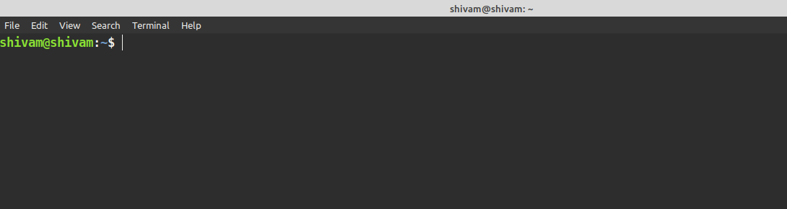
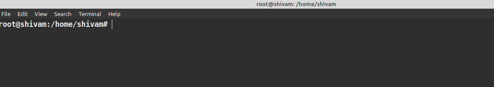
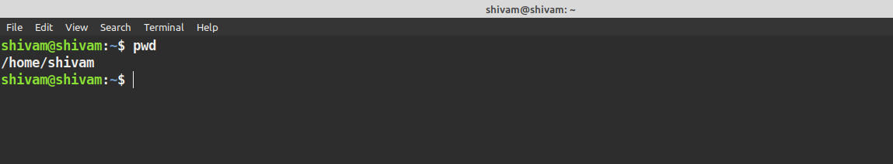
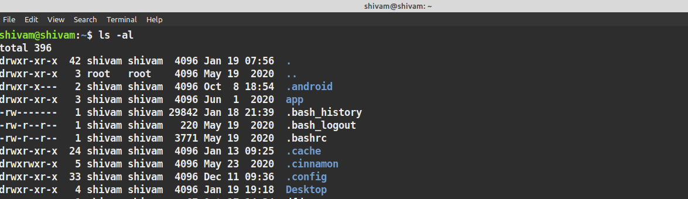

Get Started with linux CLI
Whats is Linux
Linux is open source os just like mac and windows. In simple terms, os manages the communication between hardware and software one of the most popular operating system Android is powered by Linux.
Linux kernel :
the kernel is the main piece of the operating system that manages the CPU, memory and peripheral devices thus we can say the kernel is the heart of every os that manages fundamental stuff like interacting with hardware and so on.
So Linux operating system or we can say Linux kernel this is the one piece of the whole that is actually called Linux.
Get started with CLI
(command-line interface of Linux ) or we can say using Linux terminal
why command line over the graphical user interface
so the answer is commands is flexible and offers more options that are not available in GUI mode
perform more in just one command thus mean some operations are up to four screens deep in GUI in CLI just a command
CLI is fast thus does not consume memory
get started with CLI
in Linux CLI you have to keep one thing in mind is that unlike windows command prompt Linux terminal is case sensitive.
1. go to dash and type terminal
or with command just click on clt+alt+t
the first thing that you see is something like this

so the first name is the username of the user and another one is the computer name or hostname that's so important when it's time for identifying computer over a network.
in this case shivam@shivam shivam is both user and computer name.
: is a separator and the
~ sign is shows that the user is working on the home directory
when we move to another directory is will vanish or remove
and the $ is for working as a regular user when we work as a superuser or root # will appear

now you want to work on a file you need to know in which directory you are in so tell about the present working directory you just need to type the PWD command when you log in you are in the home directory default

creating a directory:
or in a simple word for a folder
type
mkdir directory_name
we can also create multiple directories at once
mkdir directory1 directory2
and so on
changing directory :
here we let know about cd command
so using cd
cd /bin
it will move you to bin directory
and so on you can also type subdirectory after the main directory
cd /bin/cat
navigate to any directory just have to type
cd /directory1/directory2
in case you want to go previous directory type
cd ..
here you have give space after cd
it will take you inside cat directory
using this you can move anywhere on the directory
or want to go back directly to home just type
cd ~
there ~ mean the home directory
for going to root type
cd /
now you are in the root
just like in windows c:\ is the root for that here is / simply a root
two more things about changing directory is the path of the directory
is first is absolute path is the path that is the proper path of the file such as
absolute path
cd home/shivam/Pictures/
and a relative path is you are already in the home directory so you can go with
cd /Pictures
Listing Directories
showing list of files
type
ls
it will show folder and files in your current directory
but not show files inside the folder
for show files and folder inside the folder
type
ls -R
want to see with details
type
ls -al it will show hidden files too
ls -a
for only files with a details type
ls -l
Shows in list with details (it will not show hidden files)

Moving and Renaming
mv file_name /dir1/dir2
for changing name it will
same
mv file_name changed_file_name
Removing Directory
rmdir dir_name
note directory should be empty before delete it that you have to delete the first files inside it
for that type
rm file_name
man command
man command_name
example
man ls
man is stand manual that gives details about the command
sudo command
sudo command is for permission sudo is run as superuser i.e owner so some operation ask permission from the owner perform operation
for eg
sudo mv filename /opt/
it will ask for a password after that it will perform operations
note sudo is a software log thus is take logs .
history command
history for show history for commands that we used before
clear command
terminal using clear command just type clear
copy paste in terminal
type ctr+shift+c for copy
ctr+shift+v for paste
Now let us understand about file permissions
These details are
in the first column there is written drwxrwxrwx
are file-type and permission
thus the first word w indicates d is for the file is a directory
r for read ,w for write, and x for executable
so first is rwx for owner second for the user group and third for all
the second column is the memory block
third is the owner of the file
fourth is user group fifth is the file size in bytes and then time and date of creation and then the file name
the file names are starting with . (period sign) are hidden files
for just hidden files type.
later we will discuss more about file type and operaton on it
any currection or changes do let me know ping me anywhere from given contact